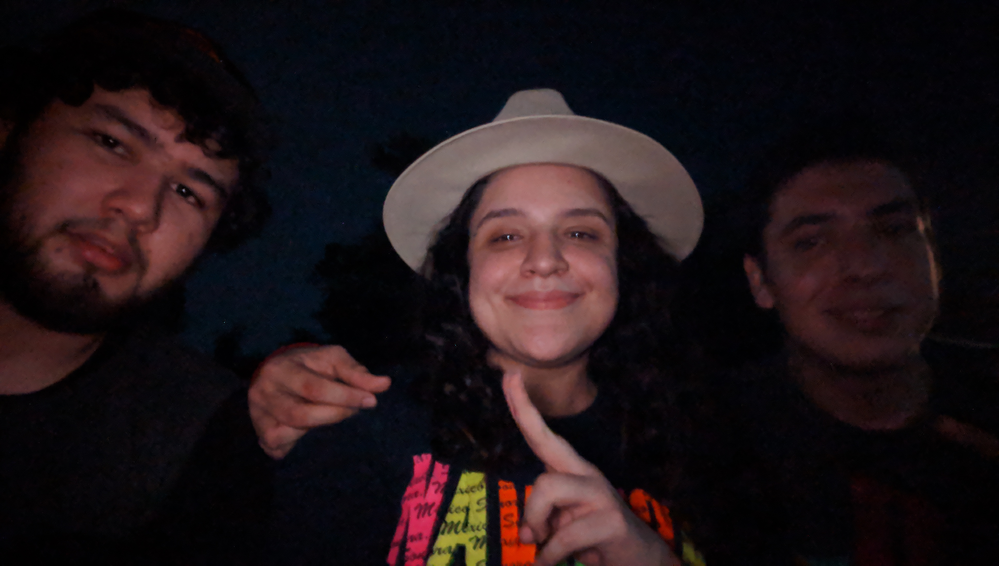

Bibliografía Consultada
Científicos de U. Autónoma y U. Talca descubren técnica más rápida para detectar Coronavirus. (s. f.). Universidad Autonoma de Chile. Recuperado 13 de agosto de 2020, de https://www.uautonoma.cl/news/cientificos-de-u-autonoma-y-u-talca-descubren-nuevo-metodo-de-diagnostico-de-covid-19-con-tecnica-mas-rapida-que-pcr
Cárdenas-Bravo L, Cabrera-Rayo A, Pérez-Barragán E, Márquez-Díaz F y col. Recursos diagnósticos en la infección por SARS-CoV-2. Med Int Méx. 2020;36(Suplemento 2):S26-S28. https://doi.org/10.24245/mim. V36id.4194 https://www.nature.com/articles/s41587-020-06
EN Nikolaev., MI Indeykina., AG Brzhozovskiy., AE Bugrova., AS Kononikhin., NL Starodubtseva., EV Petrotchenko., G Kovalev., CH Borchers., GT Sukhikh. (2020). Mass Spectrometric detection of SARS-CoV-2 virus in scrapings of the epithelium of the nasopharynx of infected patients via Nucleocapsid N protein. Consultado en 08/13/2020 en https://www.biorxiv.org/content/10.1101/2020.05.24.113043v1.full.
Nachtigall, F. M. (2020, 30 julio). Detection of SARS-CoV-2 in nasal swabs using MALDI-MS. Nature Biotechnology. https://www.nature.com/articles/s41587-020-0644-7?error=cookies_not_supported&code=61cd2cce-3a66-47cd-8796-691374b00ec5
Net InterLab S. A. (2020). ¿Cómo identificar proteínas por espectrometría de masas?. Consultado en 08/13/2020 en https://net-interlab.es/espectrometria-de-masas-proteinas/.
Universidad Autónoma de Chile (2020). Científicos de UAutónoma y UTalca descubren nuevo método de diagnóstico de COVID-19 con técnica más rápida que PCR. Consultado en 08/13/2020 en https://www.uautonoma.cl/news/cientificos-de-u-autonoma-y-u-talca-descubren-nuevo-metodo-de-diagnostico-de-covid-19-con-tecnica-mas-rapida-que-pcr/.
Universidad de Córdoba. Unidad de Proteómica (2018). Identificación proteínas por espectrometría de masas MALDI TOF-TOF. Consultado en 08/13/2020 en https://www.uco.es/investigacion/portal/images/documentos/scai/equipamiento_proteomica/PROTEOMICA-Ficha_Tecnica-MALDI__TOF-TOF_v3.pdf.
Tebar-Ferreia, P. (2018). Identificación proteínas por espectrometría de masas. Equipamento. Consultado en 08/13/2020 en https://silo.tips/download/identificacion-de-proteinas-por-espectrometria-de-masas-equipamiento#.
Trilla, A., Vieta Pascual, E., Maria Peri, J., Rubinat, M., & Violan, M. (2020, 12 marzo). ¿Qué es el Coronavirus SARS-CoV-2? | Hospital. Clínic Barcelona. https://www.clinicbarcelona.org/asistencia/enfermedades/covid-19/definicion
Equipo D-17
Agradecimientos
Clubes de Ciencia en México Challenge

Equipo D-17 Conocenos
 |
Gabriela Orona | Asesora |  |
Diana García | Universidad de guanajuato | Lic. Químico Farmacéutico Biólogo, 3° Semestre. |
|  | Jessica Mares | Universidad Ibaroamericana de Leon | Ingenieria en Biotecnología, 5° Semestre | |||
 |
Victor Gómez | Universidad Autonoma de México | Licenciatura en Química, 7° Semestre. | |||
|
Melisza Córdova | Universidad De Sonora | Lic. Químico Biólogo Clínico, 7° Semestre. |